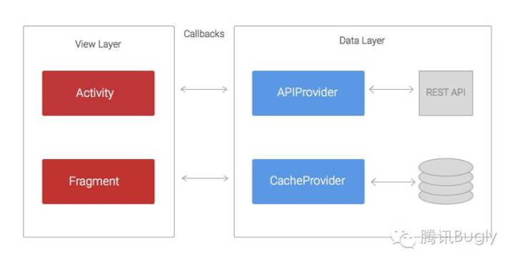
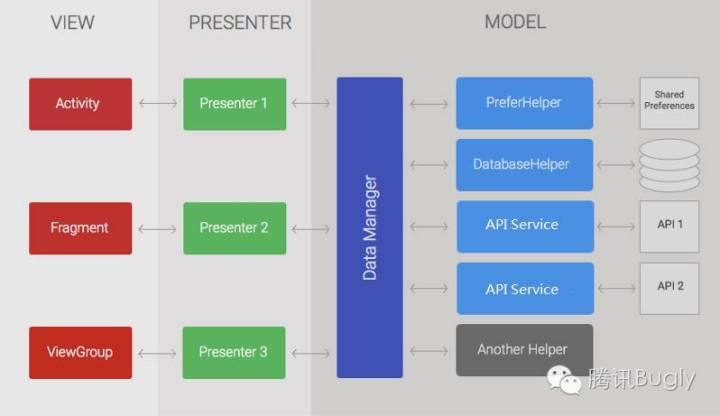

【腾讯Bugly干货分享】一步一步实现Android的MVP框架
本文来自于腾讯bugly开发者社区，非经作者同意，请勿转载，原文地址：http://dev.qq.com/topic/5799d7844bef22a823b3ad44
内容大纲：
- Android 开发框架的选择
- 如何一步步搭建分层框架
- 使用 RxJava 来解决主线程发出网络请求的问题
- 结语
一、Android开发框架的选择
由于原生 Android 开发应该已经是一个基础的 MVC 框架，所以在初始开发的时候并没有遇到太多框架上的问题，可是一旦项目规模到了一定的程度，就需要对整个项目的代码结构做一个总体上的规划，最终的目的是使代码可读，维护性好，方便测试。
只有项目复杂度到了一定程度才需要使用一些更灵活的框架或者结构，简单来说，写个 Hello World 并不需要任何第三方的框架
原生的 MVC 框架遇到大规模的应用，就会变得代码难读，不好维护，无法测试的囧境。因此，Android 开发方面也有很多对应的框架来解决这些问题。
构建框架的最终目的是增强项目代码的可读性 ，维护性 和方便测试 ，如果背离了这个初衷，为了使用而使用，最终是得不偿失的
从根本上来讲，要解决上述的三个问题，核心思想无非两种：一个是分层 ，一个是模块化 。两个方法最终要实现的就是解耦，分层讲的是纵向层面上的解耦，模块化则是横向上的解耦。下面我们来详细讨论一下 Android 开发如何实现不同层面上的解耦。
解耦的常用方法有两种：分层 与模块化
横向的模块化对大家来可能并不陌生，在一个项目建立项目文件夹的时候就会遇到这个问题，通常的做法是将相同功能的模块放到同一个目录下，更复杂的，可以通过插件化来实现功能的分离与加载。
纵向的分层，不同的项目可能就有不同的分法，并且随着项目的复杂度变大，层次可能越来越多。
对于经典的 Android MVC 框架来说，如果只是简单的应用，业务逻辑写到 Activity 下面并无太多问题，但一旦业务逐渐变得复杂起来，每个页面之间有不同的数据交互和业务交流时，activity 的代码就会急剧膨胀，代码就会变得可读性，维护性很差。
所以这里我们就要介绍 Android 官方推荐的 MVP 框架，看看 MVP 是如何将 Android 项目层层分解。
二、如何一步步搭建分层框架
如果你是个老司机，可以直接参考下面几篇文章（可在 google 搜到）：
- Android Application Architecture
- Android Architecture Blueprints - Github
- Google 官方 MVP 示例之 TODO-MVP - 简书
- 官方示例1-todo-mvp - github
dev-todo-mvp-rxjava - github
当然如果你觉得看官方的示例太麻烦，那么本文会通过最简洁的语言来讲解如何通过 MVP 来实现一个合适的业务分层。
对一个经典的 Android MVC 框架项目来讲，它的代码结构大概是下面这样(图片来自参考文献)
 简单来讲，就是 Activity 或者 Fragment 直接与数据层交互，activity 通过 apiProvider 进行网络访问，或者通过 CacheProvider 读取本地缓存，然后在返回或者回调里对 Activity 的界面进行响应刷新。
这样的结构在初期看来没什么问题，甚至可以很快的开发出来一个展示功能，但是业务一旦变得复杂了怎么办？
我们作一个设想，假如一次数据访问可能需要同时访问 api 和 cache，或者一次数据请求需要请求两次 api。对于 activity 来说，它既与界面的展示，事件等有关系，又与业务数据层有着直接的关系，无疑 activity 层会极剧膨胀，变得极难阅读和维护。
在这种结构下, activity 同时承担了 view 层和 controller 层的工作，所以我们需要给 activity 减负
所以，我们来看看 MVP 是如何做这项工作的(图片来自参考文献)
 这是一个比较典型的 MVP 结构图，相比于第一张图，多了两个层，一个是 Presenter 和 DataManager 层。
所谓自古图片留不住，总是代码得人心。下面用代码来说明这个结构的实现。
首先是 View 层的 Activity，假设有一个最简单的从 Preference 中获取字符串的界面
public class MainActivity extends Activity implements MainView { MainPresenter presenter; TextView mShowTxt; @Override protected void onCreate(Bundle savedInstanceState) { super.onCreate(savedInstanceState); setContentView(R.layout.activity_main); mShowTxt = (TextView)findViewById(R.id.text1); loadDatas(); } public void loadDatas() { presenter = new MainPresenter(); presenter.addTaskListener(this); presenter.getString(); } @Override public void onShowString(String str) { mShowTxt.setText(str); } }Activity 里面包含了几个文件，一个是 View 层的对外接口 MainView,一个是P层 Presenter
首先对外接口 MainView 文件
public interface MainView { void onShowString(String json); }因为这个界面比较简单，只需要在界面上显示一个字符串，所以只有一个接口 onShowString，再看P层代码
public class MainPresenter { MainView mainView; TaskManager taskData; public MainPresenter() { this.taskData = new TaskManager(new TaskDataSourceImpl()); } public MainPresenter test() { this.taskData = new TaskManager(new TaskDataSourceTestImpl()); return this; } public MainPresenter addTaskListener(MainView viewListener) { this.mainView = viewListener; return this; } public void getString() { String str = taskData.getTaskName(); mainView.onShowString(str); } }可以看到 Presenter 层是连接 Model 层和 View 层的中间层，因此持有 View 层的接口和 Model 层的接口。这里就可以看到 MVP 框架的威力了，通过接口的形式将 View 层和 Model 层完全隔离开来。
接口的作用类似给层与层之间制定的一种通信协议，两个不同的层级相互交流，只要遵守这些协议即可，并不需要知道具体的实现是怎样
看到这里，有人可能就要问，这跟直接调用有什么区别，为什么要大费周章的给 view 层和 Model 层各设置一个接口呢？具体原因，我们看看 Model 层的实现类就知道了。
下面这个文件是 DataManager.java，对应的是图中的 DataManager 模块
/** * 从数据层获取的数据，在这里进行拼装和组合 */ public class TaskManager { TaskDataSource dataSource; public TaskManager(TaskDataSource dataSource) { this.dataSource = dataSource; } public String getShowContent() { //Todo what you want do on the original data return dataSource.getStringFromRemote() + dataSource.getStringFromCache(); } }TaskDataSource.java 文件
/** * data 层接口定义 */ public interface TaskDataSource { String getStringFromRemote(); String getStringFromCache(); }TaskDataSourceImpl.java 文件
public class TaskDataSourceImpl implements TaskDataSource { @Override public String getStringFromRemote() { return "Hello "; } @Override public String getStringFromCache() { return "World"; } }TaskDataSourceTestImpl.java 文件
public class TaskDataSourceTestImpl implements TaskDataSource { @Override public String getStringFromRemote() { return "Hello "; } @Override public String getStringFromCache() { return " world Test "; } }从上面几个文件来看, TaskDataSource.java 作为数据层对外的接口, TaskDataSourceImpl.java 是数据层，直接负责数据获取，无论是从api获得，还是从本地数据库读取数据，本质上都是IO操作。 TaskManager 是作为业务层，对获取到的数据进行拼装，然后交给调用层。
这里我们来看看分层的作用
首先来讲业务层 TaskManager，业务层的上层是 View 层，下层是 Data 层。在这个类里，只有一个 Data 层的接口，所以业务层是不关心数据是如何取得，只需要通过接口获得数据之后，对原始的数据进行组合和拼装。因为完全与其上层和下层分离，所以我们在测试的时候，可以完全独立的是去测试业务层的逻辑。
TaskManager 中的 construct 方法的参数是数据层接口，这意味着我们可以给业务层注入不同的数据层实现。
正式线上发布的时候注入 TaskDataSourceImpl 这个实现，在测试业务层逻辑的时候，注入 TaskDataSourceTestImpl.java 实现。这也正是使用接口来处理每个层级互相通信的好处，可以根据使用场景的不用，使用不同的实现
到现在为止一个基于 MVP 简单框架就搭建完成了，但其实还遗留了一个比较大的问题。
Android 规定，主线程是无法直接进行网络请求,会抛出 NetworkOnMainThreadException 异常
我们回到 Presenter 层，看看这里的调用。因为 presenter 层并不知道业务层以及数据层到底是从网络获取数据，还是从本地获取数据（符合层级间相互透明的原则），因为每次调用都可能存在触发这个问题。并且我们知道，即使是从本地获取数据，一次简单的IO访问也要消耗10MS左右。因此多而复杂的IO可能会直接引发页面的卡顿。
理想的情况下，所有的数据请求都应当在线程中完成，主线程只负责页面渲染的工作
当然，Android 本身提供一些方案，比如下面这种：
public void getString() { final Handler mainHandler = new Handler(Looper.getMainLooper()); new Thread(){ @Override public void run() { super.run(); final String str = taskData.getShowContent(); mainHandler.post(new Runnable() { @Override public void run() { mainView.onShowString(str); } }); } }.start(); }通过新建子线程进行IO读写获取数据，然后通过主线程的 Looper 将结果通过传回主线程进行渲染和展示。
但每个调用都这样写，首先是新建线程会增加额外的成功，其次就是代码看起来很难读，缩进太多。
好在有了 RxJava ,可以比较方便的解决这个问题。
三、使用RxJava来解决主线程发出网络请求的问题
RxJava 是一个天生用来做异步的工具，相比 AsyncTask, Handler 等，它的优点就是简洁，无比的简洁。
在 Android 中使用 RxJava 需要加入下面两个依赖
compile 'io.reactivex:rxjava:1.0.14' compile 'io.reactivex:rxandroid:1.0.1'这里我们直接介绍如何使用 RxJava 解决这个问题，直接在 presenter 中修改调用方法 getString
public class MainPresenter { MainView mainView; TaskManager taskData; public MainPresenter() { this.taskData = new TaskManager(new TaskDataSourceImpl()); } public MainPresenter test() { this.taskData = new TaskManager(new TaskDataSourceTestImpl()); return this; } public MainPresenter addTaskListener(MainView viewListener) { this.mainView = viewListener; return this; } public void getString() { Func1 dataAction = new Func1<String,String>() { @Override public String call(String param) { return taskData.getTaskName(); } } Action1 viewAction = new Action1<String>() { @Override public void call( String str) { mainView.onShowString(str); } }; Observable.just("") .observeOn(Schedulers.io()) .map(dataAction) .observeOn(AndroidSchedulers.mainThread()) .subscribe(view); } }简单说明一下，与业务数据层的交互被定义到 Action1 里，然后交由 rxJava，指定 http://Schedulers.io() 获取到的线程来执行。http://Shedulers.io() 是专门用来进行IO访问的线程，并且线程会重复利用，不需要额外的线程管理。而数据返回到 View 层的操作是在 Action1 中完全，由 rxJava 交由 AndroidSchedulers.mainThread() 指定的UI主线程来执行。
从代码量上来讲，似比上一种方式要更多了，但实际上，当业务复杂度成倍增加的时候，RxJava 可以采用这种链式编程方式随意的增加调用和返回，而实现方式要比前面的方法灵活得多，简洁得多。
具体的内容就不在这里讲了，大家可以看参考下面的文章（可在 google 搜到）：
给 Android 开发者的 RxJava 详解
- RxJava 与 Retrofit 结合的最佳实践
- RxJava使用场景小结
How To Use RxJava
RxJava 的使用场景远不止这些，在上面第三篇文章提到了以下几种使用场景：
取数据先检查缓存的场景
- 需要等到多个接口并发取完数据，再更新
- 一个接口的请求依赖另一个API请求返回的数据
- 界面按钮需要防止连续点击的情况
- 响应式的界面
复杂的数据变换
四、结语
至此为止，通过 MVP+RxJava 的组合，我们已经构建出一个比较灵活的 Android 项目框架，总共分成了四部分：View 层，Presenter 层，Model 业务层，Data 数据持久化层。这个框架的优点大概有以下几点:
- 每层各自独立，通过接口通信
- 实现与接口分离，不同场景（正式，测试）可以挂载不同的实现，方便测试和开发写假数据
- 所有的业务逻辑都在非UI线程中进行，最大限度减少IO操作对UI的影响
使用 RxJava 可以将复杂的调用进行链式组合，解决多重回调嵌套问题
当然，这种方式可能还存在着各种各样的问题，欢迎同学们提出建议
更多精彩内容欢迎关注bugly的微信公众账号：weixinBugly
腾讯 Bugly是一款专为移动开发者打造的质量监控工具，帮助开发者快速，便捷的定位线上应用崩溃的情况以及解决方案。智能合并功能帮助开发同学把每天上报的数千条 Crash 根据根因合并分类，每日日报会列出影响用户数最多的崩溃，精准定位功能帮助开发同学定位到出问题的代码行，实时上报可以在发布后快速的了解应用的质量情况，适配最新的 iOS, Android 官方操作系统，鹅厂的工程师都在使用，快来加入我们吧！
文章被以下专栏收录
推荐阅读
【腾讯Bugly干货分享】一步一步实现Android的MVP框架
本文来自于腾讯bugly开发者社区，非经作者同意，请勿转载，原文地址：http://dev.qq.com/topic/5799d7844bef22a823b3ad44内容大纲：Android 开发框架的选择如何一步步搭建分层框架使用 RxJa…
【腾讯Bugly干货分享】深入浅出 Retrofit，这么牛逼的框架你们还不来看看？
Android 开发中，从原生的 HttpUrlConnection 到经典的 Apache 的 HttpClient，再到对前面这些网络基础框架的封装，比如 Volley、Async Http Client，Http 相关开源框架的选择还是很多的，…
【腾讯Bugly干货分享】Android ImageView 正确使用姿势
本文来自于腾讯bugly，未经作者同意，请勿转载，原文地址：http://dev.qq.com/topic/5832602d7196970d65901d76作者：姚志锋导语 本文主要介绍了ImageView的相关重要方法，从源码角度剖析了…
【腾讯Bugly干货分享】移动App入侵与逆向破解技术－iOS篇
本文来自于腾讯bugly开发者社区，非经作者同意，请勿转载，原文地址：http://dev.qq.com/topic/577e0acc896e9ebb6865f321如果您有耐心看完这篇文章，您将懂得如何着手进行app的分析、追踪、…
4 条评论
getTaskName呢？？
憨厚。哈哈。